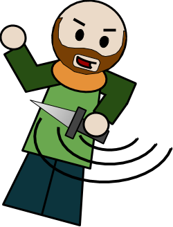

After The Witches show Macbeth his prophecies, they give Macbeth one final warning: "Beware of Macduff". Just from his name alone, you can probably tell that Macduff will be Macbeth's foil.
When Duncan, the King of England, is killed, Macduff flees to England to join Prince Malcolm, Duncan's son, and help him defend the throne from Macbeth (read that again if you need to). When Macduff learns that his wife and children were killed by Macbeth, he plans to kill Macbeth for revenge.
During the final fight at Macbeth's castle, Macbeth believes The Witches' prophecy that he cannot be killed by anyone "born of woman". However, when Macduff encounters Macbeth, he reveals he was born from a C-section. If you ask me, that's still being born from a woman. Nonetheless, Macduff manages to behead Macbeth, securing the crown for Malcolm and ending the play.
Go back